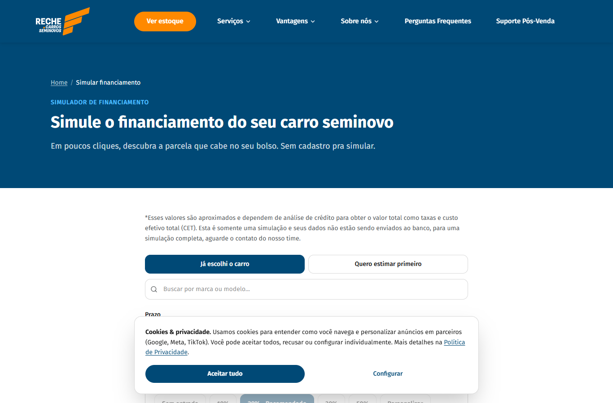
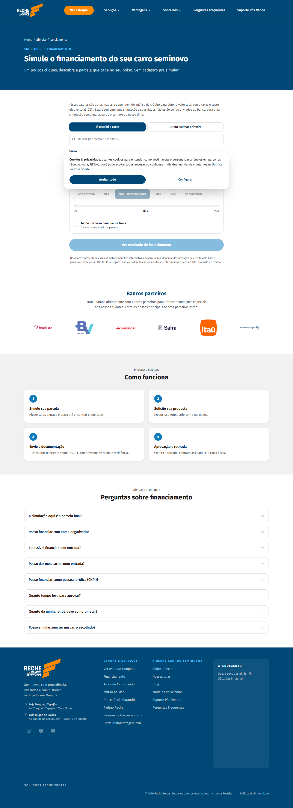

Sistema de Investigação de Marca e Identidade Online
https://recheseminovos.com.br/simular-financiamento
Prioridade: MEDIUM · Cenário: B_AMBIGUOUS_COMMUNICATION · Revisão humana: PENDING
Trata-se de loja de veículos seminovos (Reche Carros Seminovos) que disponibiliza página de simulação de financiamento e captação de propostas de crédito exibindo o logotipo do Banco BV na seção 'Bancos parceiros'. Apesar de deixar claro que é uma revenda multimarcas e que a calculadora gera estimativas preliminares, a página utiliza o logotipo da instituição financeira e omite o CNPJ, a razão social e a declaração expressa de correspondente bancário, demandando revisão à luz da Resolução CMN nº 4.935/2021. [Revisor: CONFIRM] A evidência confirma que o domínio pertence a uma loja de veículos seminovos (Reche Carros Seminovos) que oferta simulador próprio de financiamento e captação de propostas de crédito ('Simule o financiamento do seu carro seminovo'), exibindo o logotipo do Banco BV na seção 'Bancos parceiros' (E-IMG-3, E-SHOT-FULL, E-HEAD-2). Embora apresente avisos de que a simulação é preliminar (E-TXT-001, E-TXT-002), a página omite o CNPJ, a razão social completa, a declaração expressa da condição de correspondente bancário e os dados de ouvidoria (E-FTR, E-SHOT-FULL), confirmando a classificação REVIEW_REQUIRED com prioridade MEDIUM.


| Ref | Tipo | Local | Conteúdo |
|---|---|---|---|
| E-URL | domain | url | URL final: https://recheseminovos.com.br/simular-financiamento (domínio: recheseminovos.com.br) |
| E-COLLECT | network | collection | Status da coleta: OK; HTTP 200; ocorrências: network did not become idle (continuing) |
| E-DISC-001 | text | search_index | Índice de busca (grounding): recheseminovos.com.br — **Estabelecimento:** Reche Carros Seminovos | **URL:** `https://recheseminovos.com.br` (página `/simular-financiamento`) | **Uso da marca:** Apresenta uma calculadora/simulador próprio de financiamento de veículos seminovos ("Simule o financiamento do seu carro seminovo") e destaca o **Banco BV** na seção "Bancos parceiros" | **Conformidade (Razão Social, CNPJ e Condição de Correspondente):** Embora exiba um aviso de que os valores são estimativas sujeitas à aprovação de crédito pelo banco parceiro, **omite** na página do simulador a razão social, o CNPJ do estabelecimento e a declaração formal de correspondente bancário |
| E-SHOT-VIEWPORT | screenshot | viewport | evidence\C72c77579e5\attempt-1\viewport.png (sha256 a908552a21ca3685…) |
| E-SHOT-FULL | screenshot | page | evidence\C72c77579e5\attempt-1\fullpage.png (sha256 bb93751e7a6b7c95…) |
| E-TITLE | title | head | Simulação de Financiamento | Reche Carros Seminovos |
| E-META-1 | meta | head | description: Simule o financiamento do seu carro seminovo. Reche Carros Seminovos — Manaus. |
| E-META-2 | meta | head | og:title: Simulação de Financiamento |
| E-META-3 | meta | head | og:description: Simule o financiamento do seu carro seminovo. |
| E-META-4 | meta | head | author: Reche Frotas |
| E-META-5 | meta | head | application-name: Reche Carros Seminovos |
| E-CANONICAL | meta | head | https://recheseminovos.com.br/simular-financiamento |
| E-HEAD-1 | heading | page | Simule o financiamento do seu carro seminovo |
| E-HEAD-2 | heading | page | Bancos parceiros |
| E-HEAD-3 | heading | page | Como funciona |
| E-HEAD-4 | heading | page | Simule sua parcela |
| E-HEAD-5 | heading | page | Solicite sua proposta |
| E-HEAD-6 | heading | page | Envie a documentação |
| E-HEAD-7 | heading | page | Aprovação e retirada |
| E-HEAD-8 | heading | page | Perguntas sobre financiamento |
| E-HDR | text | header | Ver estoque Serviços Vantagens Sobre nós Perguntas Frequentes Suporte Pós-Venda |
| E-FOLD | text | viewport (acima da dobra) | Ver estoque Serviços Vantagens Sobre nós Perguntas Frequentes Suporte Pós-Venda Home / Simular financiamento Simulador de Financiamento Simule o financiamento do seu carro seminovo Em poucos cliques, descubra a parcela que cabe no seu bolso. Sem cadastro pra simular. *Esses valores são aproximados e dependem de análise de crédito para obter o valor total como taxas e custo efetivo total (CET). Esta é somente uma simulação e seus dados não estão sendo enviados ao banco, para uma simulação completa, aguarde o contato do nosso time. Já escolhi o carro Quero estimar primeiro Prazo 24 x 36 x 48 x 60 x Sua Entrada Quanto você quer dar de entrada? Sem entrada 10% 20% - Recomendado 30% 50% Personalizar Cookies & privacidade. Usamos cookies para entender como você navega e personalizar anúncios em parceiros (Google, Meta, TikTok). Você pode aceitar todos, recusar ou configurar individualmente. Mais detalhes na Política de Privacidade . Aceitar tudo Configurar |
| E-FTR | text | footer | Seminovos com procedência, revisados e com histórico verificado, em Manaus. Loja Torquato Tapajós Av. Torquato Tapajós, 1704 – Flores Loja Duque de Caxias Av. Duque de Caxias, 887 – Praça 14 de Janeiro VENDAS E SERVIÇOS Ver estoque completo Financiamento Troca de Carro Usado Milzão na Mão Procedência Garantida Padrão Reche Revisão na Concessionária Baixa quilometragem real A RECHE CARROS SEMINOVOS Sobre a Reche Nossas lojas Blog Modelos de Veículos Suporte Pós-Venda Perguntas Frequentes ATENDIMENTO Seg. a sex., das 8h às 17h Sáb., das 8h às 12h SOLUÇÕES RECHE FROTAS © 2026 Reche Frotas. Todos os direitos reservados. · Área Restrita · Política de Privacidade |
| E-NAV | nav | header | <https://recheseminovos.com.br/> | Ver estoque <https://recheseminovos.com.br/estoque> | Perguntas Frequentes <https://recheseminovos.com.br/faq> | Suporte Pós-Venda <https://recheseminovos.com.br/central-do-cliente> | Home <https://recheseminovos.com.br/> |
| E-CTA-1 | cta | header | Ver estoque <https://recheseminovos.com.br/estoque> |
| E-CTA-2 | cta | header | Serviços |
| E-CTA-3 | cta | header | Vantagens |
| E-CTA-4 | cta | header | Sobre nós |
| E-CTA-5 | cta | header | Buscar |
| E-CTA-6 | cta | page | Já escolhi o carro |
| E-CTA-7 | cta | page | Quero estimar primeiro |
| E-CTA-8 | cta | page | 24x |
| E-CTA-9 | cta | page | 36x |
| E-CTA-10 | cta | page | 48x |
| E-CTA-11 | cta | page | 60x |
| E-CTA-12 | cta | page | Sem entrada |
| E-CTA-13 | cta | page | 10% |
| E-CTA-14 | cta | page | 20% - Recomendado |
| E-CTA-15 | cta | page | 30% |
| E-CTA-16 | cta | page | 50% |
| E-CTA-17 | cta | page | Personalizar |
| E-CTA-18 | cta | page | Ver resultado do financiamento |
| E-CTA-19 | cta | page | Aceitar tudo |
| E-CTA-20 | cta | page | Configurar |
| E-CONTACT-1 | contact | footer | Instagram Reche Seminovos <https://www.instagram.com/recheseminovos/> |
| E-CONTACT-2 | contact | footer | Facebook Reche Seminovos <https://www.facebook.com/rechecarrosseminovos/> |
| E-IMG-1 | image | header (acima da dobra) | imagem alt='Reche Seminovos' src=https://recheseminovos.com.br/images/logo-reche.svg (120x63, acima da dobra) |
| E-IMG-2 | image | page | imagem alt='Bradesco' src=https://cdn.recheseminovos.com.br/_next/image?url=%2Fimages%2FBanco-Bradesco-logo.webp&w=256&q=75 (96x96, abaixo da dobra) |
| E-IMG-3 | image | page | imagem alt='Banco BV' src=https://cdn.recheseminovos.com.br/_next/image?url=%2Fimages%2FBanco-BV-logo.webp&w=256&q=75 (96x96, abaixo da dobra) |
| E-IMG-4 | image | page | imagem alt='Santander' src=https://cdn.recheseminovos.com.br/_next/image?url=%2Fimages%2FBanco-Santander-logo.webp&w=256&q=75 (96x96, abaixo da dobra) |
| E-IMG-5 | image | page | imagem alt='Safra' src=https://cdn.recheseminovos.com.br/_next/image?url=%2Fimages%2FBanco-Safra-logo.webp&w=256&q=75 (96x96, abaixo da dobra) |
| E-IMG-6 | image | page | imagem alt='Itaú' src=https://cdn.recheseminovos.com.br/_next/image?url=%2Fimages%2FBanco-Itau-logo.webp&w=256&q=75 (96x96, abaixo da dobra) |
| E-IMG-7 | image | page | imagem alt='Banco Volkswagen' src=https://cdn.recheseminovos.com.br/_next/image?url=%2Fimages%2FBanco-Volkswagen-logo.webp&w=256&q=75 (96x96, abaixo da dobra) |
| E-IMG-8 | image | footer | imagem alt='Reche Seminovos' src=https://recheseminovos.com.br/images/logo-reche.svg (170x90, abaixo da dobra) |
| E-IMG-9 | image | footer | imagem alt='Reche Seminovos' src=https://cdn.recheseminovos.com.br/_next/image?url=%2Fimages%2Fpartner-logo-1.png&w=3840&q=75 (120x63, abaixo da dobra) |
| E-IMG-10 | image | footer | imagem alt='Carro por Assinatura' src=https://cdn.recheseminovos.com.br/_next/image?url=%2Fimages%2Fpartner-logo-2.png&w=3840&q=75 (120x63, abaixo da dobra) |
| E-IMG-11 | image | footer | imagem alt='Reche Gestão de Frotas' src=https://cdn.recheseminovos.com.br/_next/image?url=%2Fimages%2Fpartner-logo-3.png&w=3840&q=75 (120x63, abaixo da dobra) |
| E-IMG-12 | image | footer | imagem alt='Carroflix' src=https://cdn.recheseminovos.com.br/_next/image?url=%2Fimages%2Fpartner-logo-4.png&w=3840&q=75 (111x28, abaixo da dobra) |
| E-TXT-001 | text | page | *Esses valores são aproximados e dependem de análise de crédito para obter o valor total como taxas e custo efetivo total (CET). Esta é somente uma simulação e seus dados não estão sendo enviados ao banco, para uma simulação completa, aguarde o contato do nosso time. |
| E-TXT-002 | text | page | Os valores apresentados são estimativas para fins informativos. A parcela final depende de aprovação de crédito pelo banco parceiro e pode incluir IOF, tarifas e seguros não considerados nesta simulação. Esta simulação não constitui proposta de crédito. |
| E-TXT-003 | text | page | Bancos parceiros |
| E-TXT-004 | text | page | Trabalhamos diretamente com bancos parceiros para oferecer condições especiais aos nossos clientes. Entre os nossos principais bancos parceiros estão: |
| E-TXT-005 | text | page | Posso financiar como pessoa jurídica (CNPJ)? |
| E-TXT-006 | text | page | ATENDIMENTO |
| E-TXT-007 | text | page | Cookies & privacidade. Usamos cookies para entender como você navega e personalizar anúncios em parceiros (Google, Meta, TikTok). Você pode aceitar todos, recusar ou configurar individualmente. Mais detalhes na Política de Privacidade. |
| Dimensão | Sinal | Achado | Refs |
|---|---|---|---|
| VISUAL_IDENTITY | LEGITIMATE | A página utiliza identidade visual própria da loja de veículos ('Reche Carros Seminovos'), sem imitar o layout institucional do Banco BV. | E-SHOT-VIEWPORT E-SHOT-FULL E-IMG-1 |
| DECLARED_COMMERCIAL_IDENTITY | CONFUSION | O estabelecimento se apresenta pelos nomes fantasia 'Reche Carros Seminovos' e 'Reche Frotas' com endereços em Manaus, mas omite o CNPJ e a razão social na página. | E-TITLE E-FTR E-DISC-001 |
| CORRESPONDENT_TRANSPARENCY | CONFUSION | Não há declaração expressa da condição de correspondente bancário nem divulgação de ouvidoria das instituições financeiras parceiras na página de simulação. | E-FOLD E-FTR E-DISC-001 |
| INSTITUTIONAL_LANGUAGE | LEGITIMATE | A comunicação é feita em nome da própria revenda de seminovos, informando tratar-se de simulação preliminar e referindo-se às instituições financeiras como 'bancos parceiros'. | E-TXT-001 E-TXT-002 E-TXT-004 |
| LOGO_USAGE | CONFUSION | Uso do logotipo do Banco BV na seção 'Bancos parceiros' ao lado de outras cinco instituições financeiras (Bradesco, Santander, Safra, Itaú, Banco Volkswagen). | E-IMG-2 E-IMG-3 E-IMG-4 E-IMG-5 E-IMG-6 E-IMG-7 E-SHOT-FULL |
| SERVICE_JOURNEY | CONFUSION | A página disponibiliza calculadora/simulador de financiamento de veículos e jornada de solicitação de proposta e envio de documentação sem as informações obrigatórias de transparência de correspondente. | E-FOLD E-HEAD-4 E-HEAD-5 E-HEAD-6 E-SHOT-FULL |
| CONTACT_CHANNELS | NEUTRAL | Exibe endereços físicos das lojas em Manaus, horários de atendimento e links para redes sociais próprias da revenda. | E-FTR E-CONTACT-1 E-CONTACT-2 |
| CONSUMER_CONFUSION | NEUTRAL | O consumidor compreende que está no site de uma loja multimarcas de seminovos, mas há falha de transparência regulatória quanto ao CNPJ da loja, aviso formal de correspondente e uso de marca/logotipo. | E-SHOT-FULL E-TXT-001 E-TXT-002 |
Trata-se de loja de veículos seminovos (Reche Carros Seminovos) que disponibiliza página de simulação de financiamento e captação de propostas de crédito exibindo o logotipo do Banco BV na seção 'Bancos parceiros'. Apesar de deixar claro que é uma revenda multimarcas e que a calculadora gera estimativas preliminares, a página utiliza o logotipo da instituição financeira e omite o CNPJ, a razão social e a declaração expressa de correspondente bancário, demandando revisão à luz da Resolução CMN nº 4.935/2021.
Nenhum CNPJ ou razão social identificáveis no conteúdo coletado.
| Tipo | Valor | Ref | Contexto |
|---|---|---|---|
| domain | recheseminovos.com.br | E-URL | |
| social_profile | https://www.instagram.com/recheseminovos/ | E-CONTACT-1 | |
| social_profile | https://www.facebook.com/rechecarrosseminovos/ | E-CONTACT-2 | |
| partnership_declaration | Bancos parceiros | E-DISC-001 | **Uso da marca:** Apresenta uma calculadora/simulador próprio de financiamento de veículos seminovos ("Simule o financiamento do seu carro seminovo") e destaca o **Banco BV** na seção "Bancos parceiro |
Mapeamento indicativo para apoio à auditoria. Não constitui conclusão regulatória; a decisão definitiva pertence à auditoria.
Fonte: NORMATIVE
Art. 14. O contrato de correspondente deve estabelecer: [...] II - vedação à utilização, pelo contratado, de logomarca ou de outros atributos que sejam similares aos adotados pela instituição contratante em suas agências, postos de atendimento, sítio eletrônico na internet, aplicativo ou outras plataformas de comunicação em rede;
Hipótese: Uso de logomarca ou de atributos similares aos adotados pela contratante em seus canais. A norma disciplina correspondentes contratados; o responsável não foi identificado como correspondente.
Evidência observada: E-HEAD-2 E-IMG-2 E-IMG-3 E-IMG-4 E-IMG-5 E-IMG-6 E-IMG-7 E-SHOT-FULL
Informação faltante:
Fonte: NORMATIVE
Art. 14. O contrato de correspondente deve estabelecer: [...] III - divulgação ao público, pelo contratado, de sua condição de prestador de serviços à instituição contratante, identificada pelo nome com que é conhecida no mercado, com descrição dos produtos e serviços oferecidos e canais de contato da instituição contratante, inclusive de sua ouvidoria, em local visível, em destaque e em formato legível, por meio de: a) sítio eletrônico do correspondente na internet, acessível na página inicial; b) aplicativo e outras plataformas de comunicação em rede do correspondente; [...]
Hipótese: Divulgação ao público da condição de prestador de serviços à contratante ausente, insuficiente ou sem destaque. A norma disciplina correspondentes contratados; o responsável não foi identificado como correspondente.
Evidência observada: E-DISC-001 E-FOLD E-FTR E-SHOT-FULL E-TITLE
Informação faltante:
Fonte: NORMATIVE
Art. 3º O correspondente atua por conta e sob as diretrizes da instituição contratante, que assume inteira responsabilidade pelo atendimento prestado aos clientes e usuários por meio do contratado.
Hipótese: Atendimento ao público prestado por meio do contratado em condições que podem não seguir as diretrizes da contratante. A norma disciplina correspondentes contratados; o responsável não foi identificado como correspondente.
Evidência observada: E-FOLD E-HEAD-4 E-HEAD-5 E-HEAD-6 E-SHOT-FULL
Informação faltante:
Se o responsável não for correspondente contratado, os indícios podem caracterizar uso indevido de marca ou fraude, fora do escopo da Res. 4.935: avaliar encaminhamento às áreas jurídica/segurança.
Limitações: requisitos contratuais/internos não fornecidos: mapeamento limitado ao texto normativo
Decisão: CONFIRM → REVIEW_REQUIRED / MEDIUM
A evidência confirma que o domínio pertence a uma loja de veículos seminovos (Reche Carros Seminovos) que oferta simulador próprio de financiamento e captação de propostas de crédito ('Simule o financiamento do seu carro seminovo'), exibindo o logotipo do Banco BV na seção 'Bancos parceiros' (E-IMG-3, E-SHOT-FULL, E-HEAD-2). Embora apresente avisos de que a simulação é preliminar (E-TXT-001, E-TXT-002), a página omite o CNPJ, a razão social completa, a declaração expressa da condição de correspondente bancário e os dados de ouvidoria (E-FTR, E-SHOT-FULL), confirmando a classificação REVIEW_REQUIRED com prioridade MEDIUM.
| Tema | Severidade | Questionamento | Refs |
|---|---|---|---|
| domain_attribution | MEDIUM | Responsável pela página não identificado; a conclusão sobre a marca não pode ser atribuída a um estabelecimento específico. | E-URL |
| Fonte | Consulta / hipótese | URL original | Título / trecho |
|---|---|---|---|
| grounding | Objetivo: Páginas de financiamento de veículos de lojas e multimarcas com destaque para a marca.
Execute no Google Search as seguintes consultas (dorks):
- inurl:financiamento "Banco BV" veículos -site:bv.com.br -site:bancobv.com.br -site:bvfinanceira.com.br -site:bvinvestimentos.com.br -site:napista.com.br -site:bvopen.com.br -site:meufinanciamentosolar.com.br -site:votorantim.com.br -site:vam.com.br -site:reclameaqui.com.br -site:jusbrasil.com.br -site:jus.br -site:weebly.com -site:site123.me
- inurl:financiamento "bv financeira" (veículos OR seminovos OR multimarcas) -site:bv.com.br -site:bancobv.com.br -site:bvfinanceira.com.br -site:bvinvestimentos.com.br -site:napista.com.br -site:bvopen.com.br -site:meufinanciamentosolar.com.br -site:votorantim.com.br -site:vam.com.br -site:reclameaqui.com.br -site:jusbrasil.com.br -site:jus.br -site:weebly.com -site:site123.me
- intitle:financiamento ("bv financeira" OR "Banco BV") veículos -site:bv.com.br -site:bancobv.com.br -site:bvfinanceira.com.br -site:bvinvestimentos.com.br -site:napista.com.br -site:bvopen.com.br -site:meufinanciamentosolar.com.br -site:votorantim.com.br -site:vam.com.br -site:reclameaqui.com.br -site:jusbrasil.com.br -site:jus.br -site:weebly.com -site:site123.me
Liste de forma abrangente as páginas públicas encontradas (até 12 resultados distintos), informando para cada uma o nome do estabelecimento/perfil, a URL e como a marca é utilizada (destaque visual, título, feirão, simulador, redes sociais e se há ou não identificação clara de CNPJ e condição de correspondente bancário). H2-product:financiamento de veículos | https://recheseminovos.com.br/simular-financiamento | recheseminovos.com.br **Estabelecimento:** Reche Carros Seminovos | **URL:** `https://recheseminovos.com.br` (página `/simular-financiamento`) | **Uso da marca:** Apresenta uma calculadora/simulador próprio de financiamento de veículos seminovos ("Simule o financiamento do seu carro seminovo") e destaca o **Banco BV** na seção "Bancos parceiros" | **Conformidade (Razão Social, CNPJ e Condição de Correspondente):** Embora exiba um aviso de que os valores são estimativas sujeitas à aprovação de crédito pelo banco parceiro, **omite** na página do simulador a razão social, o CNPJ do estabelecimento e a declaração formal de correspondente bancário |
Original: https://recheseminovos.com.br/simular-financiamento
Final: https://recheseminovos.com.br/simular-financiamento
| Artefato | Caminho | SHA-256 | Bytes |
|---|---|---|---|
| screenshot_viewport | evidence\C72c77579e5\attempt-1\viewport.png | a908552a21ca3685d7515308258d86e2860c32372c39ec0452f127f6f8aa2155 | 99335 |
| screenshot_full | evidence\C72c77579e5\attempt-1\fullpage.png | bb93751e7a6b7c9502eb16a034cc9b7a83ba93ed516caf6b4d6fbb2dcb4589d4 | 339046 |
| html | evidence\C72c77579e5\attempt-1\page.html.txt | 1ae4be329d284a38cb9b84186b49cf78f2f7df4ff4dcafc6ea7c0b4844c05f98 | 121559 |
| text | evidence\C72c77579e5\attempt-1\text.txt | d773c46584da904568d69a727956b2bd6f6b5896412d538531aa6cc806778d27 | 3018 |
| page_data | evidence\C72c77579e5\attempt-1\page.json | 2e1fafcef1e1ec213551dcfa4ac2116d52bbc102fb1a845b358f614937e611ce | 17354 |
| Quando | De | Para | Nota |
|---|---|---|---|
| 2026-11-23T14:17:58+00:00 | DISCOVERED | QUEUED | prioritised (score 1.0) |
| 2026-11-23T14:48:41+00:00 | QUEUED | COLLECTING | |
| 2026-11-23T14:48:55+00:00 | COLLECTING | COLLECTED | |
| 2026-11-23T14:48:55+00:00 | COLLECTED | ANALYZING | |
| 2026-11-23T14:49:27+00:00 | ANALYZING | REVIEWING | |
| 2026-11-23T14:49:35+00:00 | REVIEWING | COMPLETED |